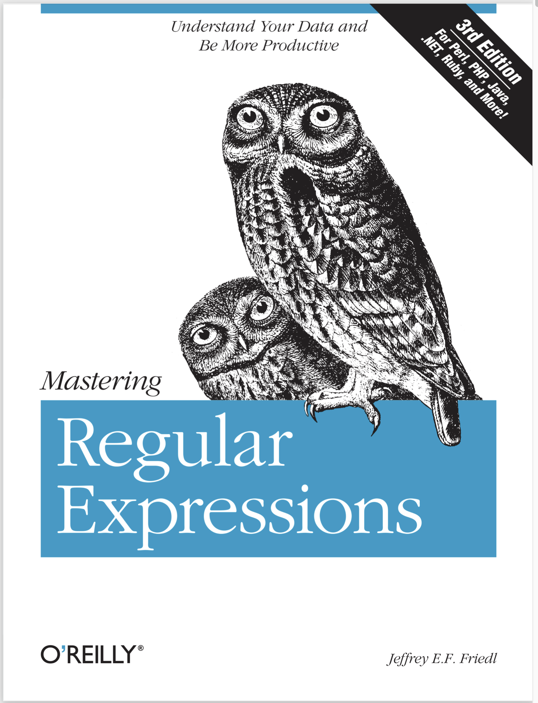

library(here) # manage file paths
library(socviz) # data and some useful functionsData Wrangling, Session 5
Code Horizons
October 2, 2024
Regular
Expressions

This book is a thing of beauty.
A regular expression is a way of searching for a piece of text, or pattern, inside some larger body of text, called a string.
The simplest sort of search is like the “Find” functionality in a Word Processor. The pattern is a literal letter, number, punctuation mark, word or series of words; the text is a document searched one line at a time. The next step up is “Find and Replace”.
Every pattern-searching function in stringr has the same basic form:
Functions that replace as well as detect strings all have this form:
(If you think about it, <STRING>, <PATTERN> and <REPLACEMENT> above are all kinds of pattern: they are meant to “stand for” all kinds of text, not be taken literally.)
This is the price we pay for having to express searches for patterns using a language containing these same characters, which we may also want to search for.
I promise this will pay off
[1] │ <apple> pie
[2] │ <apple>
[3] │ <apple> cake\d matches any digit.
\s matches any whitespace (e.g. space, tab, newline).
abc matches a, b, or c.
^abc matches anything except a, b, or c.
Look for a literal character that normally has special meaning in a regex:
This works for most (but not all) regex metacharacters: $ . | ? * + ( ) [ {. Unfortunately, a few characters have special meaning even inside a character class and must be handled with backslash escapes. These are ] \ ^ and -
Use parentheses to make the precedence of the ‘or’ operator | clear:
By default regexps use greedy matches. You can make them match the shortest string possible by putting a ? after them. This is often very useful!
By default these are greedy matches. You can make them “lazy”, matching the shortest string possible by putting a ? after them. This is often very useful!
[1] "apple" "apricot" "avocado"
[4] "banana" "bell pepper" "bilberry"
[7] "blackberry" "blackcurrant" "blood orange"
[10] "blueberry" "boysenberry" "breadfruit"
[13] "canary melon" "cantaloupe" "cherimoya"
[16] "cherry" "chili pepper" "clementine"
[19] "cloudberry" "coconut" "cranberry"
[22] "cucumber" "currant" "damson"
[25] "date" "dragonfruit" "durian"
[28] "eggplant" "elderberry" "feijoa"
[31] "fig" "goji berry" "gooseberry"
[34] "grape" "grapefruit" "guava"
[37] "honeydew" "huckleberry" "jackfruit"
[40] "jambul" "jujube" "kiwi fruit"
[43] "kumquat" "lemon" "lime"
[46] "loquat" "lychee" "mandarine"
[49] "mango" "mulberry" "nectarine"
[52] "nut" "olive" "orange"
[55] "pamelo" "papaya" "passionfruit"
[58] "peach" "pear" "persimmon"
[61] "physalis" "pineapple" "plum"
[64] "pomegranate" "pomelo" "purple mangosteen"
[67] "quince" "raisin" "rambutan"
[70] "raspberry" "redcurrant" "rock melon"
[73] "salal berry" "satsuma" "star fruit"
[76] "strawberry" "tamarillo" "tangerine"
[79] "ugli fruit" "watermelon" stringr is Perl- or PCRE2-like.# A tibble: 3,320 × 13
cid constituency electorate party_name candidate votes vote_share_percent
<chr> <chr> <int> <chr> <chr> <int> <dbl>
1 W07000… Aberavon 50747 Labour Stephen … 17008 53.8
2 W07000… Aberavon 50747 Conservat… Charlott… 6518 20.6
3 W07000… Aberavon 50747 The Brexi… Glenda D… 3108 9.8
4 W07000… Aberavon 50747 Plaid Cym… Nigel Hu… 2711 8.6
5 W07000… Aberavon 50747 Liberal D… Sheila K… 1072 3.4
6 W07000… Aberavon 50747 Independe… Captain … 731 2.3
7 W07000… Aberavon 50747 Green Giorgia … 450 1.4
8 W07000… Aberconwy 44699 Conservat… Robin Mi… 14687 46.1
9 W07000… Aberconwy 44699 Labour Emily Ow… 12653 39.7
10 W07000… Aberconwy 44699 Plaid Cym… Lisa Goo… 2704 8.5
# ℹ 3,310 more rows
# ℹ 6 more variables: vote_share_change <dbl>, total_votes_cast <int>,
# vrank <int>, turnout <dbl>, fname <chr>, lname <chr># A tibble: 3,320 × 13
# Groups: constituency [650]
cid constituency electorate party_name candidate votes vote_share_percent
<chr> <chr> <int> <chr> <chr> <int> <dbl>
1 W07000… Aberavon 50747 Labour Stephen … 17008 53.8
2 W07000… Aberavon 50747 Conservat… Charlott… 6518 20.6
3 W07000… Aberavon 50747 The Brexi… Glenda D… 3108 9.8
4 W07000… Aberavon 50747 Plaid Cym… Nigel Hu… 2711 8.6
5 W07000… Aberavon 50747 Liberal D… Sheila K… 1072 3.4
6 W07000… Aberavon 50747 Independe… Captain … 731 2.3
7 W07000… Aberavon 50747 Green Giorgia … 450 1.4
8 W07000… Aberconwy 44699 Conservat… Robin Mi… 14687 46.1
9 W07000… Aberconwy 44699 Labour Emily Ow… 12653 39.7
10 W07000… Aberconwy 44699 Plaid Cym… Lisa Goo… 2704 8.5
# ℹ 3,310 more rows
# ℹ 6 more variables: vote_share_change <dbl>, total_votes_cast <int>,
# vrank <int>, turnout <dbl>, fname <chr>, lname <chr># A tibble: 650 × 13
# Groups: constituency [650]
cid constituency electorate party_name candidate votes vote_share_percent
<chr> <chr> <int> <chr> <chr> <int> <dbl>
1 W07000… Aberavon 50747 Labour Stephen … 17008 53.8
2 W07000… Aberconwy 44699 Conservat… Robin Mi… 14687 46.1
3 S14000… Aberdeen No… 62489 Scottish … Kirsty B… 20205 54
4 S14000… Aberdeen So… 65719 Scottish … Stephen … 20388 44.7
5 S14000… Aberdeenshi… 72640 Conservat… Andrew B… 22752 42.7
6 S14000… Airdrie & S… 64008 Scottish … Neil Gray 17929 45.1
7 E14000… Aldershot 72617 Conservat… Leo Doch… 27980 58.4
8 E14000… Aldridge-Br… 60138 Conservat… Wendy Mo… 27850 70.8
9 E14000… Altrincham … 73096 Conservat… Graham B… 26311 48
10 W07000… Alyn & Dees… 62783 Labour Mark Tami 18271 42.5
# ℹ 640 more rows
# ℹ 6 more variables: vote_share_change <dbl>, total_votes_cast <int>,
# vrank <int>, turnout <dbl>, fname <chr>, lname <chr># A tibble: 650 × 13
cid constituency electorate party_name candidate votes vote_share_percent
<chr> <chr> <int> <chr> <chr> <int> <dbl>
1 W07000… Aberavon 50747 Labour Stephen … 17008 53.8
2 W07000… Aberconwy 44699 Conservat… Robin Mi… 14687 46.1
3 S14000… Aberdeen No… 62489 Scottish … Kirsty B… 20205 54
4 S14000… Aberdeen So… 65719 Scottish … Stephen … 20388 44.7
5 S14000… Aberdeenshi… 72640 Conservat… Andrew B… 22752 42.7
6 S14000… Airdrie & S… 64008 Scottish … Neil Gray 17929 45.1
7 E14000… Aldershot 72617 Conservat… Leo Doch… 27980 58.4
8 E14000… Aldridge-Br… 60138 Conservat… Wendy Mo… 27850 70.8
9 E14000… Altrincham … 73096 Conservat… Graham B… 26311 48
10 W07000… Alyn & Dees… 62783 Labour Mark Tami 18271 42.5
# ℹ 640 more rows
# ℹ 6 more variables: vote_share_change <dbl>, total_votes_cast <int>,
# vrank <int>, turnout <dbl>, fname <chr>, lname <chr># A tibble: 650 × 2
constituency party_name
<chr> <chr>
1 Aberavon Labour
2 Aberconwy Conservative
3 Aberdeen North Scottish National Party
4 Aberdeen South Scottish National Party
5 Aberdeenshire West & Kincardine Conservative
6 Airdrie & Shotts Scottish National Party
7 Aldershot Conservative
8 Aldridge-Brownhills Conservative
9 Altrincham & Sale West Conservative
10 Alyn & Deeside Labour
# ℹ 640 more rowslibrary(ukelection2019)
ukvote2019 |>
group_by(constituency) |>
slice_max(votes) |>
ungroup() |>
select(constituency, party_name) |>
mutate(shire = str_detect(constituency, "shire"),
field = str_detect(constituency, "field"),
dale = str_detect(constituency, "dale"),
pool = str_detect(constituency, "pool"),
ton = str_detect(constituency, "(ton$)|(ton )"),
wood = str_detect(constituency, "(wood$)|(wood )"),
saint = str_detect(constituency, "(St )|(Saint)"),
port = str_detect(constituency, "(Port)|(port)"),
ford = str_detect(constituency, "(ford$)|(ford )"),
by = str_detect(constituency, "(by$)|(by )"),
boro = str_detect(constituency, "(boro$)|(boro )|(borough$)|(borough )"),
ley = str_detect(constituency, "(ley$)|(ley )|(leigh$)|(leigh )"))# A tibble: 650 × 14
constituency party_name shire field dale pool ton wood saint port ford
<chr> <chr> <lgl> <lgl> <lgl> <lgl> <lgl> <lgl> <lgl> <lgl> <lgl>
1 Aberavon Labour FALSE FALSE FALSE FALSE FALSE FALSE FALSE FALSE FALSE
2 Aberconwy Conservat… FALSE FALSE FALSE FALSE FALSE FALSE FALSE FALSE FALSE
3 Aberdeen No… Scottish … FALSE FALSE FALSE FALSE FALSE FALSE FALSE FALSE FALSE
4 Aberdeen So… Scottish … FALSE FALSE FALSE FALSE FALSE FALSE FALSE FALSE FALSE
5 Aberdeenshi… Conservat… TRUE FALSE FALSE FALSE FALSE FALSE FALSE FALSE FALSE
6 Airdrie & S… Scottish … FALSE FALSE FALSE FALSE FALSE FALSE FALSE FALSE FALSE
7 Aldershot Conservat… FALSE FALSE FALSE FALSE FALSE FALSE FALSE FALSE FALSE
8 Aldridge-Br… Conservat… FALSE FALSE FALSE FALSE FALSE FALSE FALSE FALSE FALSE
9 Altrincham … Conservat… FALSE FALSE FALSE FALSE FALSE FALSE FALSE FALSE FALSE
10 Alyn & Dees… Labour FALSE FALSE FALSE FALSE FALSE FALSE FALSE FALSE FALSE
# ℹ 640 more rows
# ℹ 3 more variables: by <lgl>, boro <lgl>, ley <lgl>library(ukelection2019)
ukvote2019 |>
group_by(constituency) |>
slice_max(votes) |>
ungroup() |>
select(constituency, party_name) |>
mutate(shire = str_detect(constituency, "shire"),
field = str_detect(constituency, "field"),
dale = str_detect(constituency, "dale"),
pool = str_detect(constituency, "pool"),
ton = str_detect(constituency, "(ton$)|(ton )"),
wood = str_detect(constituency, "(wood$)|(wood )"),
saint = str_detect(constituency, "(St )|(Saint)"),
port = str_detect(constituency, "(Port)|(port)"),
ford = str_detect(constituency, "(ford$)|(ford )"),
by = str_detect(constituency, "(by$)|(by )"),
boro = str_detect(constituency, "(boro$)|(boro )|(borough$)|(borough )"),
ley = str_detect(constituency, "(ley$)|(ley )|(leigh$)|(leigh )")) |>
pivot_longer(shire:ley, names_to = "toponym")# A tibble: 7,800 × 4
constituency party_name toponym value
<chr> <chr> <chr> <lgl>
1 Aberavon Labour shire FALSE
2 Aberavon Labour field FALSE
3 Aberavon Labour dale FALSE
4 Aberavon Labour pool FALSE
5 Aberavon Labour ton FALSE
6 Aberavon Labour wood FALSE
7 Aberavon Labour saint FALSE
8 Aberavon Labour port FALSE
9 Aberavon Labour ford FALSE
10 Aberavon Labour by FALSE
# ℹ 7,790 more rowsplace_tab <- ukvote2019 |>
group_by(constituency) |>
slice_max(votes) |>
ungroup() |>
select(constituency, party_name) |>
mutate(shire = str_detect(constituency, "shire"),
field = str_detect(constituency, "field"),
dale = str_detect(constituency, "dale"),
pool = str_detect(constituency, "pool"),
ton = str_detect(constituency, "(ton$)|(ton )"),
wood = str_detect(constituency, "(wood$)|(wood )"),
saint = str_detect(constituency, "(St )|(Saint)"),
port = str_detect(constituency, "(Port)|(port)"),
ford = str_detect(constituency, "(ford$)|(ford )"),
by = str_detect(constituency, "(by$)|(by )"),
boro = str_detect(constituency, "(boro$)|(boro )|(borough$)|(borough )"),
ley = str_detect(constituency, "(ley$)|(ley )|(leigh$)|(leigh )")) |>
pivot_longer(shire:ley, names_to = "toponym")# A tibble: 7,800 × 4
constituency party_name toponym value
<chr> <chr> <chr> <lgl>
1 Aberavon Labour shire FALSE
2 Aberavon Labour field FALSE
3 Aberavon Labour dale FALSE
4 Aberavon Labour pool FALSE
5 Aberavon Labour ton FALSE
6 Aberavon Labour wood FALSE
7 Aberavon Labour saint FALSE
8 Aberavon Labour port FALSE
9 Aberavon Labour ford FALSE
10 Aberavon Labour by FALSE
# ℹ 7,790 more rows# A tibble: 7,800 × 4
# Groups: party_name, toponym [120]
constituency party_name toponym value
<chr> <chr> <chr> <lgl>
1 Aberavon Labour shire FALSE
2 Aberavon Labour field FALSE
3 Aberavon Labour dale FALSE
4 Aberavon Labour pool FALSE
5 Aberavon Labour ton FALSE
6 Aberavon Labour wood FALSE
7 Aberavon Labour saint FALSE
8 Aberavon Labour port FALSE
9 Aberavon Labour ford FALSE
10 Aberavon Labour by FALSE
# ℹ 7,790 more rows# A tibble: 6,816 × 4
# Groups: party_name, toponym [24]
constituency party_name toponym value
<chr> <chr> <chr> <lgl>
1 Aberavon Labour shire FALSE
2 Aberavon Labour field FALSE
3 Aberavon Labour dale FALSE
4 Aberavon Labour pool FALSE
5 Aberavon Labour ton FALSE
6 Aberavon Labour wood FALSE
7 Aberavon Labour saint FALSE
8 Aberavon Labour port FALSE
9 Aberavon Labour ford FALSE
10 Aberavon Labour by FALSE
# ℹ 6,806 more rows# A tibble: 6,816 × 4
# Groups: toponym, party_name [24]
constituency party_name toponym value
<chr> <chr> <chr> <lgl>
1 Aberavon Labour shire FALSE
2 Aberavon Labour field FALSE
3 Aberavon Labour dale FALSE
4 Aberavon Labour pool FALSE
5 Aberavon Labour ton FALSE
6 Aberavon Labour wood FALSE
7 Aberavon Labour saint FALSE
8 Aberavon Labour port FALSE
9 Aberavon Labour ford FALSE
10 Aberavon Labour by FALSE
# ℹ 6,806 more rows# A tibble: 24 × 3
# Groups: toponym [12]
toponym party_name freq
<chr> <chr> <int>
1 boro Conservative 7
2 boro Labour 1
3 by Conservative 6
4 by Labour 2
5 dale Conservative 3
6 dale Labour 1
7 field Conservative 10
8 field Labour 10
9 ford Conservative 17
10 ford Labour 12
# ℹ 14 more rows# A tibble: 24 × 4
# Groups: toponym [12]
toponym party_name freq pct
<chr> <chr> <int> <dbl>
1 boro Conservative 7 0.875
2 boro Labour 1 0.125
3 by Conservative 6 0.75
4 by Labour 2 0.25
5 dale Conservative 3 0.75
6 dale Labour 1 0.25
7 field Conservative 10 0.5
8 field Labour 10 0.5
9 ford Conservative 17 0.586
10 ford Labour 12 0.414
# ℹ 14 more rows# A tibble: 12 × 4
# Groups: toponym [12]
toponym party_name freq pct
<chr> <chr> <int> <dbl>
1 boro Conservative 7 0.875
2 by Conservative 6 0.75
3 dale Conservative 3 0.75
4 field Conservative 10 0.5
5 ford Conservative 17 0.586
6 ley Conservative 26 0.722
7 pool Conservative 2 0.286
8 port Conservative 3 0.333
9 saint Conservative 3 0.5
10 shire Conservative 37 0.974
11 ton Conservative 37 0.507
12 wood Conservative 7 0.636# A tibble: 12 × 4
# Groups: toponym [12]
toponym party_name freq pct
<chr> <chr> <int> <dbl>
1 shire Conservative 37 0.974
2 boro Conservative 7 0.875
3 by Conservative 6 0.75
4 dale Conservative 3 0.75
5 ley Conservative 26 0.722
6 wood Conservative 7 0.636
7 ford Conservative 17 0.586
8 ton Conservative 37 0.507
9 field Conservative 10 0.5
10 saint Conservative 3 0.5
11 port Conservative 3 0.333
12 pool Conservative 2 0.286# A tibble: 12 × 4
# Groups: toponym [12]
toponym party_name freq pct
<chr> <chr> <int> <dbl>
1 shire Conservative 37 0.974
2 boro Conservative 7 0.875
3 by Conservative 6 0.75
4 dale Conservative 3 0.75
5 ley Conservative 26 0.722
6 wood Conservative 7 0.636
7 ford Conservative 17 0.586
8 ton Conservative 37 0.507
9 field Conservative 10 0.5
10 saint Conservative 3 0.5
11 port Conservative 3 0.333
12 pool Conservative 2 0.286